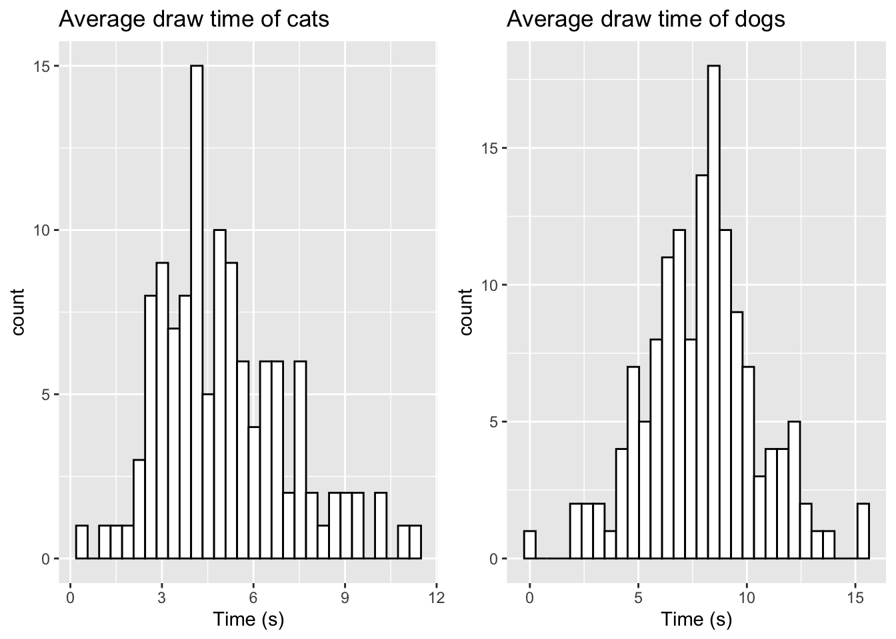
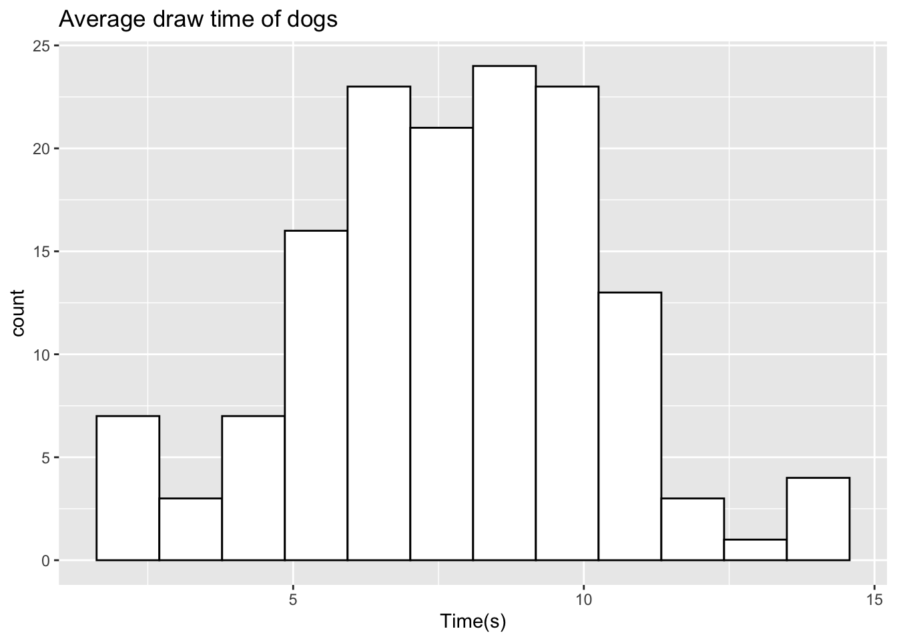

2.1 Question 1
In this example, we will take a look at question 1 from Paper 1 in 2021. This question is a report style question based on Google AI data of times taken to draw a cat or a dog. The example contains a stem and leaf diagram with the combined data and some summary statistics for both sets of drawings. Following this, a Mann-Whitney Test is carried out to test whether both samples have different average drawing times.
We will now look at how we can draw a sample of the data from the question, by randomly sampling data for both groups using properties from their summary statistics
2.1.1 Generating a random sample of data
We can generate a random sample of data for both the categories using the summary statistics provided. As we can see from the stem and leaf diagram, the data have a lower bound, where we cannot observe any data below zero, as the data recorded are based on time elapsed.
In order to sample data of this form, we can use a variation of the Normal distribution called the truncated normal distribution, which allows us to bound a Normal distribution through a given range.
To randomly sample data from this distribution, we can use the rtruncnorm function from the truncnorm package in R as follows:
sample_dog <- rtruncnorm(n=145, a=0, b=16, mean=7.5, sd=2.66)
sample_cat <- rtruncnorm(n=121, a=0, b=14, mean=5.4, sd=2.31)The parameters required are defined as follows:
n- the number of samples we wish to drawa- the lower bound of the distribution (here, we will set this to 0)b- the upper bound of the distribution (here, we have set this to be the ceiling of the max value for each group)mean- the mean of each groupsd- the standard deviation of each group
Running the code above will produce a sample for both groups based on their relative summary statistics. We can check the summary statistics of our data using summary()
summary(sample_dog)## Min. 1st Qu. Median Mean 3rd Qu. Max.
## 1.260 5.420 6.979 7.172 8.846 14.280summary(sample_cat)## Min. 1st Qu. Median Mean 3rd Qu. Max.
## 0.5993 4.5442 5.9961 5.8839 6.9648 12.43112.1.2 Visualising the data
We can also check the distribution of our sampled data for comparison by visualising it using a histogram. The ggplot2 library found in the tidyverse library provides several functions for data visualisation and has become more popular than base R graphics. We will use the geom_histogram() function from the library in this example as follows:
dog_hist <- ggplot(data.frame(sample_dog),aes(x=sample_dog)) + geom_histogram(color="black",fill="white") +
labs(title="Average draw time of dogs",x="Time (s)")
cat_hist <- ggplot(data.frame(sample_cat),aes(x=sample_cat)) + geom_histogram(color="black",fill="white") +
labs(title="Average draw time of cats",x="Time (s)")
grid.arrange(dog_hist,cat_hist,ncol=2)## `stat_bin()` using `bins = 30`. Pick better value with `binwidth`.
## `stat_bin()` using `bins = 30`. Pick better value with `binwidth`.
To create these histograms, the code above works in the following fashion:
- We first specify our data using
ggplot(data), where our data here is either group of samples. - To specify which variables we would like to select, we use the
aes()argument. As we only have one sample of data in each case, we specify this usingx=data. - We then generate the histogram using
geom_histogram(), where we can define the line colour usingcolorand the filled colour of the bars usingfill. - We can label our plot using the
labsargument, where we can include atitleand anxaxis label
We can also alter the number of bins we use (ggplot will set a standard number of bins by default) using the bins argument. Let’s alter the number of bins for the dog data to be 10
dog_hist <- ggplot(data.frame(sample_dog),aes(x=sample_dog)) + geom_histogram(color="black",fill="white",bins=10) +
labs(title="Average draw time of dogs",x="Time (s)")2.1.3 Setting random seeds for reproducability
When we randomly sample data each time in R, we will obtain a different sample than before. Let’s run our previous code twice to see if there is any differences:
sample_dog1 <- rtruncnorm(n=145, a=0, b=16, mean=7.5, sd=2.66)
sample_dog2 <- rtruncnorm(n=145, a=0, b=16, mean=7.5, sd=2.66)
summary(sample_dog1)## Min. 1st Qu. Median Mean 3rd Qu. Max.
## 0.4464 5.7736 7.3936 7.5150 9.2837 13.4899summary(sample_dog2)## Min. 1st Qu. Median Mean 3rd Qu. Max.
## 0.239 5.346 7.562 7.454 9.250 13.457We see that both samples produce different summary statistics. This can cause difficulty when you are working on a specific problem and want to design questions around the specific characteristics of the data you have sampled the first time.
We can force R to use the same random number generation by using the set.seed() function. Here, we specify the seed from the random number generator we want to use each time we generate samples. This number can be any number you wish to choose! The example below highlights how this works:
set.seed(2023)
sample_dog1 <- rtruncnorm(n=145, a=0, b=16, mean=7.5, sd=2.66)
set.seed(2023)
sample_dog2 <- rtruncnorm(n=145, a=0, b=16, mean=7.5, sd=2.66)
summary(sample_dog1)## Min. 1st Qu. Median Mean 3rd Qu. Max.
## 2.006 6.316 7.545 7.798 9.365 14.776summary(sample_dog2)## Min. 1st Qu. Median Mean 3rd Qu. Max.
## 2.006 6.316 7.545 7.798 9.365 14.776Here, we see we can produce the same data as the first sample by setting the seed prior to sampling.
2.1.4 Manually editing data
If we take a sample of data and perhaps wish to add some additional variables to mimic the original data closer, this can easily be done in R. Let’s take a sample for the dog data but lower our boundary to 14 and visualise
sample_dog <- rtruncnorm(n=145, a=0, b=14, mean=7.5, sd=2.66)
ggplot(data.frame(sample_dog),aes(x=sample_dog)) + geom_histogram(color="black",fill="white",bins=12) +
labs(title="Average draw time of dogs",x="Time (s)")
When comparing this to the original data from the paper, we see that we do not observe the two outliers at 14.3 seconds and 15.2 seconds. We can manually add these values as follows:
sample_dog <- c(sample_dog, c(14.3,15.2))
ggplot(data.frame(sample_dog),aes(x=sample_dog)) + geom_histogram(color="black",fill="white",bins=12) +
labs(title="Average draw time of dogs",x="Time (s)") We now observe the two additional values in the histogram. For a vector of data, we can easily add new values using the
We now observe the two additional values in the histogram. For a vector of data, we can easily add new values using the c() command. This can be done by specifying our original data first, and then including our additional variables in a new c() object. If we only wish to add one value, we do not need to use c().
2.1.5 Sampling from different distributions
In this case, the data shown roughly takes the form of a Normal distribution. There are several cases where this may not be an appropriate distribution. R contains a full range of different distributions we can sample from. Some common choices are shown below:
rbinom()- Sample from a Binomial distributionrchisq()- Sample from a Chi-squared distributionrgamma()- Sample from a Gamma distributionrunif()- Sample from a Uniform distributionrexp()- Sample from an Exponential distribution
This list is not exhaustive, and R will contain libraries that will allow sampling from almost any known distribution.
2.1.6 Performing a Mann-Whitney Test
We can carry out a Mann-Whitney test in R as follows
sample_dog <- rtruncnorm(n=145, a=0, b=16, mean=7.5, sd=2.66)
sample_cat <- rtruncnorm(n=121, a=0, b=14, mean=5.4, sd=2.31)
mann_whitney <- wilcox.test(sample_dog,sample_cat)
mann_whitney##
## Wilcoxon rank sum test with continuity correction
##
## data: sample_dog and sample_cat
## W = 12823, p-value = 9.048e-11
## alternative hypothesis: true location shift is not equal to 0The output from this test gives us the rank sum W and a p-value which can be used for question creation